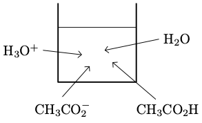

Étude de quelques transformations chimiques modélisées par des réactions acido-basiques
Action du chlorure d’hydrogène sur l’eau
On introduit $\pu{0,010 mol}$ de chlorure d’hydrogène $\ce{HCl (g)}$ dans $\pu{1,0 L}$ d’eau. On mesure le pH de la solution ainsi formée et on obtient : $\mathrm{pH} = \pu{2,0}$.
On fait l’hypothèse que la transformation de dissolution est totale.
- La transformation due à la réaction chimique entre le chlorure d’hydrogène solubilisé et l’eau est-elle totale ?
Solution
$$ \ce{HCl (aq) + H2O –> Cl^- (aq) + H3O^+} $$
| État | Avancement | $\ce{HCl}$ | $+$ | $\ce{H2O}$ | $\ce{–>}$ | $\ce{Cl^-}$ | $\ce{H3O^+}$ |
|---|---|---|---|---|---|---|---|
| Initial | $0$ | $n_i(\ce{HCl})$ | excès | $0$ | $0$ | ||
| Intermédiaire | $x$ | $n_i(\ce{HCl}) - x$ | excès | $x$ | $x$ | ||
| Final | $x_f$ | $n_i(\ce{HCl}) - x_f$ | excès | $x_f$ | $x_f$ | ||
| Final hypo. | $x_{max}$ | $n_i(\ce{HCl}) - x_{max}$ | excès | $x_{max}$ | $x_{max}$ |
-
$n_i(\ce{HCl}) - x_{max} = 0 \iff x_{max} = n_i(\ce{HCl})$
$x_{max} = \pu{0,010 mol}$ -
$x_f = n_f(\ce{H3O^+}) = C^o \cdot V \cdot 10^{-\mathrm{pH}}$ puisque $\mathrm{pH} = -\log \dfrac{[\ce{H3O^+}]_f}{C^o}$ avec $C^o = \pu{1,00 mol.L-1}$.
$x_f = \pu{1,00 mol.L-1} \times \pu{1,0 L} \times 10^{—2,0} = \pu{0,010 mol}$.
En conclusion, $x_f = x_{max}$ ; la transformation chimique est totale.
Action de l’acide éthanoïque sur l’eau
La transformation chimique est-elle totale ?
On introduit $\pu{0,010 mol}$ d’acide éthanoïque pur dans $\pu{1,0 L}$ d’eau. On mesure le pH de la solution ainsi formée et on obtient : $\mathrm{pH} = \pu{3,4}$.
On fait l’hypothèse que la transformation de solubilisation est totale.
- La transformation due à la réaction chimique entre l’acide éthanoïque solubilisé et l’eau est-elle totale ?
Solution
$$ \ce{CH3CO2H (aq) + H2O –> CH3CO2^- (aq) + H3O^+} $$
| État | Avancement | $\ce{CH3CO2H}$ | $+$ | $\ce{H2O}$ | $\ce{–>}$ | $\ce{CH3CO2^-}$ | $\ce{H3O^+}$ |
|---|---|---|---|---|---|---|---|
| Initial | $0$ | $n_i(\ce{CH3CO2H})$ | excès | $0$ | $0$ | ||
| Intermédiaire | $x$ | $n_i(\ce{CH3CO2H}) - x$ | excès | $x$ | $x$ | ||
| Final | $x_f$ | $n_i(\ce{CH3CO2H}) - x_f$ | excès | $x_f$ | $x_f$ | ||
| Final hypo. | $x_{max}$ | $n_i(\ce{CH3CO2H}) - x_{max}$ | excès | $x_{max}$ | $x_{max}$ |
-
$n_i(\ce{CH3CO2H}) - x_{max} = 0 \iff x_{max} = n_i(\ce{CH3CO2H})$
$x_{max} = \pu{0,010 mol}$ -
$x_f = n_f(\ce{H3O^+}) = C^o \cdot V \cdot 10^{-\mathrm{pH}}$ puisque $\mathrm{pH} = -\log \dfrac{[\ce{H3O^+}]_f}{C^o}$ avec $C^o = \pu{1,00 mol.L-1}$.
$x_f = \pu{1,00 mol.L-1} \times \pu{1,0 L} \times 10^{—\pu{3,4}} = \pu{4,0e-4 mol}$.
En conclusion, $x_f < x_{max}$ ; la transformation chimique n’est pas totale.
Il existe deux réactions inverses
- On verse dans deux béchers le même volume $V$ d’une solution d’acide éthanoïque à la concentration $c = \pu{0,010 mol/L}$.
-
On ajoute au premier bécher quelques gouttes d’acide acétique pur $\ce{CH3CO2H}$.
On constate que le pH diminue. -
On ajoute au second bécher quelques cristaux d’acétate de sodium $\ce{CH3CO2Na}$.
On constate que le pH augmente.
Que permettent de conclure ces deux expériences ?
Réponse
$$ \ce{CH3CO2H (aq) + H2O <=> CH3CO2^- (aq) + H3O^+} $$ Il faut noter que lorsqu’on réalise les étapes 1. et 2. le système est à l’équilibre puisque la cinétique des réactions acido-basique est très rapide.

-
Le pH diminue lorsqu’on ajoute de l’acide acétique pur. La concentration en ions oxonium augmente donc dans le milieu.
L’acide acétique réagit donc avec l’eau (sens direct de l’équation). -
Le pH augmente lorsqu’on ajoute des ions acétate. La concentration en ions oxonium diminue diminue donc dans le milieu.
Les ions oxonium réagissent donc avec les ions acétate (sens indirect de l’équation).
La transformation modélisée par la réaction de l’acide éthanoïque avec l’eau conduit à un équilibre chimique. Ces expériences nous permettent de mettre en évidence que la transformation chimique n’est en fait pas modélisable par une réaction chimique mais par deux réactions chimiques inverses l’une de l’autre.
Systèmes chimiques en équilibre
Définition
-
Lors de la transformation chimique de certains systèmes, l’état final peut être constitué par les produits mais aussi les réactifs, dans des proportions constantes.
-
Cet état final est alors appelé état d’équilibre.
-
À l’échelle microscopique, des chocs efficaces ont lieu entre entités réactives d’une part et entre entités produites d’autre part.
Lorsque l’état d’équilibre est atteint, pendant la même durée, les nombres de chocs efficaces entre entités réactives d’une part et entités produites d’autre part sont égaux. Les quantités de réactifs et de produits sont donc constantes au cours du temps. -
À l’échelle macroscopique, l’état du système ne semble plus évoluer alors qu’à l’échelle microscopique, les entités continuent à réagir.
Avancement final et avancement maximal
Lors de l’étude d’une transformation chimique, on détermine :
-
La valeur de l’avancement final $x_f$.
Cette valeur se détermine soit à partir du résultat d’une mesure, soit par calcul si on connaît la valeur de la constante d’équilibre. -
La valeur de l’avancement maximal $x_{max}$ que l’on obtiendrait si la transformation était totale (disparition du réactif limitant).
Cette valeur s’obtient toujours par le calcul.

Taux d’avancement final
Le taux d’avancement final $\tau$ d’une réaction chimique a pour expression : $$ \tau = \dfrac{x_f}{x_{max}} $$ $\tau$ est un nombre sans dimension compris entre 0 et 1.
-
Lorsque $\tau = 0$, le système n’a pas du tout évolué.
-
Lorsque $\tau = 1$, la transformation chimique est totale.
Aspect cinétique
Exercices d’application
Carbonate de magnésium
On mélange une solution aqueuse $A$ contenant, entre autres, $\pu{1,00 mmol}$ d’ions $\ce{Mg^{2+}}$ avec une solution aqueuse $B$ contenant, entre autres, $\pu{1,00 mmol}$ d’ions carbonate $\ce{CO3^{2-}}$.
Un précipité de carbonate de magnésium, $\ce{MgCO3}$, apparaît.
On filtre le mélange obtenu, le précipité est séché puis pesé. On trouve $m(\ce{MgCO3}) = \pu{45,7 mg}$.
- Quel est l’avancement maximal de la réaction ?
- Calculer l’avancement final de la réaction ainsi que le taux d’avancement final.
- Quelle est la composition du système dans l’état final ? Que peut-on dire d’un tel état ?
- Donnée
- La masse molaire du carbonate de magnésium est égale à $M( \ce{MgCO3} ) = \pu{84,3 g.mol-1}$.
Réponses
- $$\ce{ Mg^{2+} (aq) + CO3^{2-} (aq) <=> MgCO3 (s) }$$
| État | Avancement | $\ce{Mg^{2+}}$ | $+$ | $\ce{CO3^{2-}}$ | $\ce{<–>}$ | $\ce{MgCO3}$ |
|---|---|---|---|---|---|---|
| Initial | $0$ | $n_1$ | $n_2$ | $0$ | ||
| Intermédiaire | $x$ | $n_1 - x$ | $n_2 - x$ | $x$ | ||
| Final | $x_f$ | $n_1 - x_f$ | $n_2 - x_f$ | $x_f$ | ||
| Final hypo. | $x_{max}$ | $n_1 - x_{max}$ | $n_2 - x_{max}$ | $x_{max}$ |
-
$n_1 - x_{max} = 0 \iff x_{max} = n_1$. A.N. $x_{max} = \pu{1,00 mmol}$.
-
$n_2 - x_{max} = 0 \iff x_{max} = n_2$. A.N. $x_{max} = \pu{1,00 mmol}$.
Les réactifs ont été introduits dans les proportions stœchiométriques ; $x_{max} = \pu{1,00 mmol}$.
-
$x_f = n_f (\ce{MgCO3}) = \dfrac{m (\ce{MgCO3})}{M (\ce{MgCO3})}$
A.N. $x_f = \dfrac{\pu{45,7e-3 g}}{\pu{84,3 g.mol-1}} = \pu{5,42e-4 mol} = \pu{0,542 mmol}$
$\tau = \dfrac{x_f}{x_{max}} = \dfrac{\pu{0,542 mmol}}{\pu{1,00 mmol}} = \pu{0,542}$. La taux d’avancement final est égal à 54,2 %.
-
- $n_f (\ce{MgCO3}) = \pu{0,542 mmol}$
- $n_f (\ce{Mg^{2+}}) = n_f (\ce{CO3^{2-}}) = \pu{1,00 mmol} - \pu{0,542 mmol} = \pu{0,458 mmol}$
Produits et réactifs coexistent dans l’état final, c’est un état d’équilibre.
L’acide lactique
L’acide lactique, de formule $\ce{C3H6O3}$, est utilisé en solution pour ses propriétés bactéricides.
- Donnée
- La masse molaire moléculaire de l’acide lactique est $M(\ce{C3H6O3}) = \pu{90,0 g.mol-1}$
- Quelle est la base conjuguée de l’acide lactique ? Écrire la demi-équation acido-basique associée à ce couple.
On dispose d’une solution commerciale $S_0$ d’acide lactique de pourcentage massique $P = 85\; \text{\%}$ et de masse volumique $\mu = \pu{1,20e3 g.L-1}$. À partir de $S_0$, on prépare une solution $S$ d’acide lactique de concentration apportée $C$ et de volume $V = \pu{1,00 L}$.
Pour cela, on verse un volume $V_0 = \pu{5,0 mL}$ de solution commerciale $S_0$ dans environ $\pu{200 mL}$ d’eau contenue dans une fiole jaugée de $\pu{1,00 L}$ puis on ajoute la quantité d’eau nécessaire.
-
Quelle est la concentration apportée $C$ en acide lactique de la solution obtenue ?
-
Écrire l’équation de la réaction de l’acide lactique avec l’eau.
On verse un volume $V$ dans un bécher et on mesure le $\mathrm{pH}$ de la solution. On obtient $\mathrm{pH} = \pu{2,57}$.
-
Montrer que le taux d’avancement final ne dépend pas du volume $V$.
-
Calculer sa valeur. La transformation est-elle totale ?
Réponses
-
La base conjuguée de l’acide lactique est l’ion lactate de formule $\ce{C3H5O3^-}$.
La demi-équation acido-basique associée s’écrit : $$ \ce{ C3H6O3 = C3H5O3^- + H+ } $$ -
La quantité $n$ d’acide lactique apporté est la même dans le volume $V_0$ de la solution $S_0$ et dans le volume $V$ de la solution $S$.
Or $n = C \cdot V$. $m$ étant la masse de solution $S_0$ prélevée et $M$ la masse molaire de l’acide lactique, on en déduit : $$ C = \dfrac{n}{V} = \dfrac{m}{V \cdot M} $$ En utilisant le pourcentage massique $P$ et la masse volumique $\mu$ de la solution commerciale, on obtient : $$ C = \dfrac{\mu \cdot V_0 \cdot P}{V \cdot M} $$ A.N. $C = \dfrac{\pu{1,20e3 g.L-1} \times \pu{5,0e-3 L} \times \pu{0,85}}{\pu{1,00 L} \times \pu{90,0 g.mol-1}} = \pu{0,057 mol.L-1}$ -
$$\ce{ C3H6O3 (aq) + H2O <=> C3H5O3^- (aq) + H3O+ }$$
| État | Avancement | $\ce{C3H6O3}$ | $+$ | $\ce{H2O}$ | $\ce{–>}$ | $\ce{C3H5O3^-}$ | $\ce{H3O^+}$ |
|---|---|---|---|---|---|---|---|
| Initial | $0$ | $n_i(\ce{C3H6O3})$ | excès | $0$ | $0$ | ||
| Intermédiaire | $x$ | $n_i(\ce{C3H6O3}) - x$ | excès | $x$ | $x$ | ||
| Final | $x_f$ | $n_i(\ce{C3H6O3}) - x_f$ | excès | $x_f$ | $x_f$ | ||
| Final hypo. | $x_{max}$ | $n_i(\ce{C3H6O3}) - x_{max}$ | excès | $x_{max}$ | $x_{max}$ |
-
$n_i(\ce{C3H6O3}) - x_{max} = 0 \iff x_{max} = n_i(\ce{C3H6O3}) = C \cdot V$
-
$x_f = n_f(\ce{H3O^+}) = C^o \cdot V \cdot 10^{-\mathrm{pH}}$ puisque $\mathrm{pH} = -\log \dfrac{[\ce{H3O^+}]_f}{C^o}$ avec $C^o = \pu{1,00 mol.L-1}$.
-
$\tau = \dfrac{x_f}{x_{max}} = \dfrac{C^o \cdot V \cdot 10^{-\mathrm{pH}}}{C \cdot V}$ soit $$ \tau = \dfrac{C^o \cdot 10^{-\mathrm{pH}}}{C} $$ Le taux d’avancement final ne dépend pas du volume $V$.
- $\tau = \dfrac{\pu{1,00 mol.L-1} \times 10^{—2,57}}{\pu{0,057 mol.L-1}} = \pu{0,047}$. Le taux d’avancement final vaut 4,7 %. La transformation chimique est très limitée.
pH et $-\log C$
On mesure le pH de solutions d’acide benzoïque $\ce{C6H5COOH}$ de concentrations apportées $C$. Les résultats des mesures sont regroupés dans le tableau suivant :
| $ C (\pu{mol.L-1})$ | $ \pu{2,0e-2}$ | $ \pu{1,0e-2}$ | $ \pu{5,0e-3}$ | $ \pu{1,0e-3}$ |
|---|---|---|---|---|
| pH | 2,95 | 3,10 | 3,25 | 3,60 |
| $ C (\pu{mol.L-1})$ | $ \pu{5,0e-4}$ | $ \pu{1,0e-4}$ | $ \pu{5,0e-5}$ | $ \pu{1,0e-5}$ |
|---|---|---|---|---|
| pH | 3,75 | 4,25 | 4,50 | 5,10 |
- Écrire l’équation de la réaction entre l’acide benzoïque et l’eau.
- En utilisant les données d’une des colonnes du tableau, montrer que les transformations ne sont pas totales.
- Pour chaque mesure, comparer $\mathrm{pH}$ et $-\log C$. Proposer une interprétation.
- Tracer le graphe $\mathrm{pH} = f(-\log C)$.
Pour $\pu{1,0e-4} < C < \pu{2,0e-2 mol.L-1}$, vérifier que le graphe est une droite dont on déterminera le coefficient directeur. - Calculer pour chaque mesure le taux d’avancement final de la réaction. Dans quel sens évolue-t-il lorsque la concentration en acide diminue ?
Iodure de plomb
On mélange un volume $V_A = \pu{50 mL}$ de solution de nitrate de plomb, $(\ce{Pb^{2+} (aq) + 2 N03^- (aq)})$, de concentration $C_A = \pu{2,00e-2 mol.L-1}$ et un volume $V_S = \pu{50 mL}$ de solution d’iodure de potassium, $\ce{K^+ (aq) + I^- (aq) })$, de concentration $C_S = \pu{4,00e-2 mol.L-1}$. On observe l’apparition d’un précipité jaune d’iodure de plomb. On filtre le mélange obtenu et on récupère le précipité. Après rinçage et séchage, on détermine sa masse $m$, on obtient $m = \pu{0,41 g}$.
-
Déterminer les quantités d’ions plomb et iodure dans l’état initial. Que peut-on dire de ce mélange ?
-
Quel est l’avancement maximal de la réaction de précipitation ?
-
Déterminer l’avancement final et le taux d’avancement final de la réaction. La transformation modélisée par cette réactions est-elle totale ?
-
Quelle est la composition en quantité de matière du système dans l’état final ?
Solubilité de l’aspirine
L’acide acétylsalicylique, $\ce{C9H8O4}$, plus connu sous le nom d’aspirine est peu soluble dans l’eau.
On lit sur la notice d’un médicament : « L’aspirine du Rhône 500 doit être utilisée de préférence avant ou au cours d’un repas même léger. Il est souhaitable d’absorber les comprimés après les avoir faits se désagréger dans un verre d’eau. »
- Justifier l’utilisation du verbe désagréger.
Une solution d’acide acétylsalicylique de titre massique $t = \pu{0,90 g.L-1}$ a un pH égal à 2,95.
-
Écrire l’équation de la réaction entre l’acide et l’eau.
-
Déterminer le taux d’avancement final de la réaction. La transformation chimique modélisée par cette réaction est-elle totale ?
On désagrège un comprimé d’aspirine du Rhône dans un verre d’eau. La solution est saturée. On ajoute alors une solution de soude et on observe la disparition des particules solides.
-
Écrire la réaction acide-basique entre l’acide acétylsalicylique et les ions hydroxyde $\ce{HO-}$.
-
La base conjuguée de l’acide acétylsalicylique est-elle plus ou moins soluble que l’aspirine ? Justifier la réponse.
On considère maintenant une solution non saturée d’aspirine et on y ajoute un peu de solution concentrée d’acide chlorhydrique. On observe l’apparition d’un solide blanc.
- Interpréter cette observation.